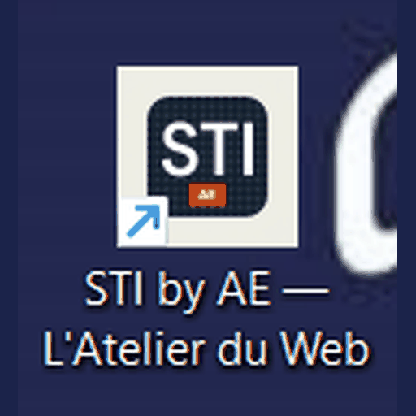
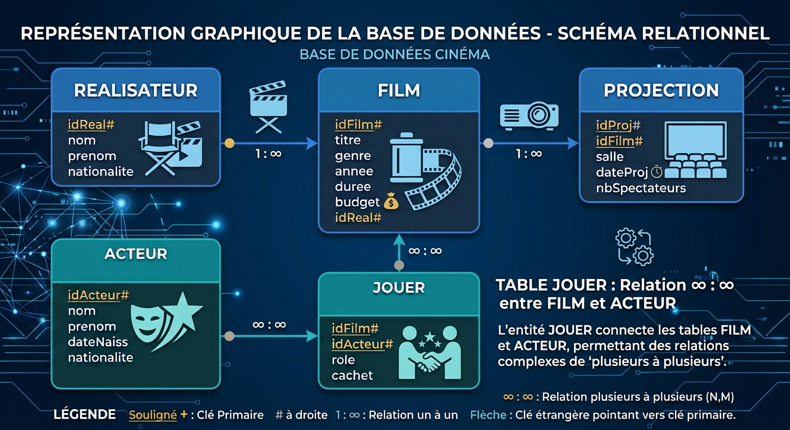

STI Version 2.0 By A'E v13.0Devenez responsable de la base de données d'une société de production cinématographique.
Vous êtes recruté par une société de production cinématographique. Votre mission : prendre le contrôle de sa base de données cinema (REALISATEUR, FILM, ACTEUR, JOUER, PROJECTION).
Une vidéo vous guide chapitre après chapitre. À des moments précis, elle se met en pause et une question interactive apparaît : requêtes SQL, QCM, prévision de résultats… Vous répondez, vous validez, et la correction pédagogique s'affiche avant que la vidéo ne reprenne.
Progression sauvegardée automatiquement dans votre navigateur. Vous pouvez reprendre plus tard.
